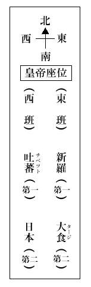

（一）緒言
毎年この六月に、弘法大師降誕會が主催となり、東西の碩學を聘して講演會を開き、大師の遺風餘徳を偲ぶといふことは、極めて結構な企と思ふ。古人を尚友すと申して、過去の偉人を修養の手本とするのは、非常に效驗が多い。現存の人々にも立派な方は尠くなからうが、生きた人間の褒貶は定らぬ。憲政の神樣が一朝にして憲政の賊に早變りなし、清節を看板の人が、その反對の事實を新聞紙上に
さて本年は不肖私が講演を引き受けいたした次第であるが、如何なる講演をいたすべきかと、可なり苦心を拂うた。一體私は宗教上の知識が不十分で、殊に眞言宗に就いての知識は皆無である。從つて大師の宗教上に於ける偉績を申述べる資格がない。さらばとて大師の文學とか、藝術とかに關しては、已に前年來先輩諸博士の講演が發表されて居つて、この方面でも餘り得意でない私が、態
 蛇足を添へる必要を認めぬ。そこで色々思案の末に、茲に掲げた「大師の入唐」といふ題目を選ぶことにいたした。
蛇足を添へる必要を認めぬ。そこで色々思案の末に、茲に掲げた「大師の入唐」といふ題目を選ぶことにいたした。私は自分の專門として、唐時代の歴史は多少調査して居る。また私は支那へ滿二年間留學いたした。丁度大師も二年間唐に留學されて居る。大師が一年餘り滯在になつた長安には、私も半月餘り滯留いたした。大師が福建から長安へ、長安から浙江へ往復された、その道筋の半ばは、千百年後に、私も親しく通過した所である。この縁故により、大師の入唐の時、その往復に如何なる道筋をとられたであらうか。その旅行は如何に困難であつたであらうか。當時の長安は如何なる状態であつたであらうか。大師は長安で如何なる行動をされたであらうかといふ風の問題を、當時の記録と私自身の體驗とを土臺として御話し申したい。かかる講演は當會で未だ發表されて居らぬ樣であるし、旁
萬更不適當のものであるまいと思ふ。（二）渡海
大師の入唐はその三十一歳の時で、正しく桓武天皇の延暦二十三年（西暦八〇四）に當る。この年の七月六日に、遣唐大使藤原
申す迄もなく、當時の航海は帆船に乘るので、風の利用が第一に緊要である。所が當時日支間の航海に、この風の利用が十分研究されて居なかつた。一體西は紅海より、東は日本海に至る、東洋の海上に吹く風の方向は、季節によつて略一定して居る。所によつては多少の相違はあるが、極めて大體を見渡して、陰暦の四、五月から七、八月にかけては、多く西南の風が吹き、九、十月から翌年の一、二月にかけては、多く東北の風が吹く。その以後は復た西南の風が吹き出すといふ樣に、季節によつて吹く風の方向が略一定して居る。これは西暦六十年の頃に、エジプトのアレキサンドリアの住人ヒッパルスといふ人が始めて發見して、航海に利用したと傳へられるので、ヒッパルス風とも、また恆信風ともいはれた。この風の利用が開けて以來、西洋から東洋に渡航するには、西南風を利用して四・五月の頃から發船する。その反對に東洋から西洋に出掛けるには、十月以後に發船する。帆船時代には皆この恆信風を利用したもので、唐宋時代の歴史を見渡すと、南洋や西洋の貿易船が支那に入港するのは、大抵夏の五月の南風の吹く頃で、之を夏迅といひ、その貿易船が西洋や南洋へ歸航するのは、冬の十月十一月の北風の吹く時で、之を冬迅というた。
日支間の航海にもこの風を利用すべきと思ふが、事實大師の時代には、餘り之を利用せなかつた樣である。この時代に日本から支那に出掛けるには、大抵夏期を選ぶ。光仁天皇の寶龜七年（西暦七七六）の閏八月に、遣唐使一行の上奏に、今既入二於秋節一、逆風日扇、臣等望、待二來年夏月一、庶得二渡海一（『續日本紀』卷卅四）といへる通りである。現に大師等も七月六日に田浦を發船されて居る。支那から日本に歸るのは秋冬の交を選ぶ。これらは恆信風利用の點から觀れば、間違つて居ると申さねばならぬ。勿論恆信風以外に、低氣壓や潮流の關係や、その他の事情もあつて、簡單に斷定は出來ぬが、恆信風を利用する上から申せば、その反對に、春夏の交に支那から日本に、秋期に日本から支那に渡航する方が寧ろ安全便利と思ふ。
幾多の入唐僧侶の中で、尤も迅速なる渡海を遂げたのは、安祥寺の惠運和尚であらう。彼は仁明天皇の承和九年（西暦八四二）秋八月二十四日に、肥前國松浦郡
 海道侯縣）より西南風に乘じ、五日四夜にして遠値賀島に到着して居る。これも往復ともに恆信風を利用したればこそ、かく容易な航海を遂げ得たのである。かく西暦九世紀の半頃となると、恆信風を利用した場合が多く見當るが、その五十年前の大師の入唐時代には、未だこの利用が十分に知られて居なかつた樣に思ふ。
海道侯縣）より西南風に乘じ、五日四夜にして遠値賀島に到着して居る。これも往復ともに恆信風を利用したればこそ、かく容易な航海を遂げ得たのである。かく西暦九世紀の半頃となると、恆信風を利用した場合が多く見當るが、その五十年前の大師の入唐時代には、未だこの利用が十分に知られて居なかつた樣に思ふ。次に航海には方向を正確に知ることが必要で、それには羅針盤を使用せなければならぬが、羅針盤が航海に利用さるるに至つたのは、大師の時代より約三百年後の北宋の末期からである。大師の時代には、世界の何地でも、まだ航海に羅針盤を使用して居らぬ。從つてこの時代の航海は、日月星宿を目標にして方向を定めるといふ、至極不安心のものであつた。大師より約四百年の昔に、法顯がセイロンから南洋を經て支那に歸着した。その當時の航海の有樣を記して
海中多有二抄賊一、遇輙無レ全。大海彌漫無レ邊、不レ識二東西一、唯望二日月星宿一而進。若陰雨時、爲二逐風一去、亦無レ所レ准。至二天晴已一、乃知二東西一、還望レ正而進。若値二伏石一（暗礁）、則無二活路一（『法顯傳』）。
と申して居る。法顯その人も廣州へ入港する豫定が、難風に遇ひ方向を誤つて、今の山東の膠州灣附近へ漂着したのである。唐時代の航海の状態もほぼそれと同樣であつた。唐時代でも、南洋方面から來る貿易船は
之に加へて當時我が國の造船術も操船術も倶に幼稚で、支那は勿論、或は朝鮮よりも劣つて居つた。齊明天皇の御世に、百濟援助の目的で戰艦を造つたが、折角出來上ると間もなく「
上述の如き事情であるから、當時の航海の例として、出發の時にも歸朝の時にも、三四艘を一組となし、互に連絡をとつて航行するが、大抵中途で離散する。二三の著しい難船の實例を示すと、
（ａ）聖武天皇の御世に、遣唐大使多治比眞人廣成の一行は、天平六年（西暦七三四）十月に四艘の船に分乘して、蘇州（今の呉縣）から歸朝の途に就いたが、大使の搭乘した第一船が比較的無事なりしを除くの外、その他の三艘は皆難船した。中にも判官平群朝臣廣成の一行百十五人の搭乘した第三船は、南海の崑崙國（林邑國今の佛領安南の一部）に漂着し、或は殺害せられ、或は病死して、僅に四人だけ生存し、唐の保護を受けて、十年（西暦七三八）三月に、山東の登州（今の膠東道蓬莱縣）より渤海國に送られ、渤海國使の我が國に入貢するに同行して、龍原府（今の朝鮮の國境の圖們江口附近）より歸朝せんとしたが、又逆風の爲に、出羽國に漂着して、翌十一年（西暦七三九）の十一月に、六年目でやつと平城の京に到着した。
（ｂ）その後約二十年にして孝謙天皇の天平勝寶五年（西暦七五三）の十一月に、遣唐大使藤原清河らの一行も亦四艘の船に分乘して、蘇州から解纜したが、間もなく離散し、中にも清河や阿倍仲麿の搭乘した第一船は、安南の驩州方面に漂着して、安南から更に長安に歸つた。清河も仲麿も之が爲に、遂に再び故國を見ることを得ずに唐で逝去した。十月や十一月に支那を發船すると、東北風を受けて、安南や林邑方面へ吹き附けらるるのが當然であらう。
（ｃ）更にその後二十五年を經て、光仁天皇の寶龜九年（西暦七七八）に遣唐副使小野朝臣
此の如き状態であるから、當時支那へ渡航するのは、殆ど命掛けと申しても決して誇張でない。學問の爲とか信仰の爲とか、專心精進の人は格別、御役目で唐へ派遣される人々は、先づ難有迷惑の方であつた。遣唐使出發の際には、例として朝廷で送別の宴を御開きになるが、隨分濕りぽいものであつた。大師の同伴された、遣唐大使の藤原葛野麻呂の爲に開かれた、送別の宴の有樣も、葛野麻呂涕涙如レ雨、侍レ宴群臣無レ不二流涕一と傳へられてゐる（『日本紀略』前篇十三）。遣唐大使の佐伯今毛人や、遣唐副使の小野篁などは、渡航を忌避したと推せらるる形迹がある。暦學や天文を研究すべく、唐に派遣された留學生の中にも、愈
本國發船の際に亡命して身を隱した者がある（『續日本紀』卷八）。宇多天皇の寛平七年（西暦八九五）に遂に遣唐使を廢止したが、これには唐の衰亂といふ原因もあらうが、遣唐使廢止の發議者たる菅原道眞の主張に、
臣等伏檢二舊記一、度度使等、或有二渡海不レ堪レ命者一。或有二遭レ賊遂亡レ身者一。唯未レ見レ至レ唐、有二難阻飢寒之悲一（『菅家文章』卷九）。
とあるに據ると、渡海の危險といふことも、その一大原因と認めねばならぬ。要するに大師時代の入唐は非常に危險多く、今日の歐米留學などと同一視すべきものでない。さて話が本題に立ち歸つて、わが大師の渡海の有樣を申述べよう。最初肥前の田浦出發の時は、當時の慣例として四艘一組となり、同時に帆を揚げたが、間もなく離散した。中にも大師の乘船は、最も困難なる航海を續けたことは、大師の作られた「爲二大使一與二福州觀察使一書」（『性靈集』卷五）に、
忘レ身衝レ命、冒レ死入レ海。既辭二本涯一、比レ及二中途一、暴風穿レ帆、 風折レ柁。高波沃レ
風折レ柁。高波沃レ漢 、短舟裔々。※風 ［＃「豈＋風」、352-14］朝扇、摧二肝耽羅之狼心一。北氣日發、失二膽留求之虎性一。頻二蹙猛風一、待二葬鼈口一。攅二眉驚汰一、占二宅鯨腹一。隨レ浪昇沈、任レ風南北。但見二天水之碧色一、豈視二山谷之白霧一。掣二掣波上一、二月有餘。水盡人疲、海長陸遠。飛レ虚脱レ翼、泳レ水殺レ鰭、何足レ爲レ喩哉。
とあるにて、その大體を察知することが出來る。耽羅とは今の濟州島のことで、南風の爲に、ここに漂着すると、掠奪に遭はねばならぬ。留求とは今の臺灣のことで、北風の爲に、ここに漂着すると、人喰種族に殺されねばならぬ。この敍述には幾分文章上の修飾誇張があるかも知れぬが、『日本後紀』卷十二の遣唐大使藤原葛野麻呂の復命にも、この時の航海の有樣を述べて、風折レ柁。高波沃レ
出二入死生之間一、掣二曳波濤之上一、都 卅四箇日。
とあるのを併せ考へると、當時の困難を略想像することが出來ると思ふ。海上に漂蕩した日數は、一つは卅四箇日といひ、一つは二月有餘とあつて、所傳一致を缺くが、七月六日わが田浦を發し、八月十日に唐の赤岸鎭に着したから、航海日數は正しく卅四日で、二月有餘とあるは、或は一月有餘の誤かも知れぬ。（三）福建着港
大使の一行は他の友船と離れて、海上に在ること卅四日にして、八月十日に、唐の福州長溪縣赤岸鎭の海口に到着した。長溪縣は大體に於て今の福建省
海道霞浦縣の地に當る。赤岸鎭とは今の霞浦縣の西郊に近く赤岸溪といふ河がある。その河畔に在つたものと想はれる。その附近の海口を赤岸港といふ。赤岸とはこの附近一帶赤土にて樹木少なき故に、かく名付けたのであらう。この方面は福建地方でも尤も海中に突出して居り、從つて明の嘉靖時代にも、倭冦が頻繁に出沒した所である。一體唐時代に、日本船は多く揚子江沿岸に出入した。江蘇の揚州（今の淮揚道江都縣）とか、蘇州（今の蘇常道呉縣）とかが、日本船出入の要津であつた。大師の作られた、「爲二大使一與二福州觀察使一書」の中に、
建中（西暦七八〇―七八三）以往、入朝使船、直着二揚蘇一。
とある通りであつた。錢塘江口の明州や越州（今の浙江省會稽道紹興縣）へも、隨分日本船が出入した。宋時代になると、この浙江沿岸の方が、支那と日本朝鮮との交通の門戸と確定した。然るに福建方面は、從來餘り日本と交渉がない。長溪縣へ日本船の入港したるは、恐らく今囘が最初であらう。大師の便乘した第一船も、勿論揚子江口か、錢塘江口を目的としたのであらうが、風波の爲に、この南邊に到着した譯である。この長溪縣は邊鄙の小縣とて不便多く、更に地方長官（福州觀察使）所在地の福州へ
 航を命ぜられ、我が遣唐大使の一行は赤岸鎭を後に、福州に到着したのは、その年の十月三日のことである。
航を命ぜられ、我が遣唐大使の一行は赤岸鎭を後に、福州に到着したのは、その年の十月三日のことである。支那來航の外國船に貢舶と市舶との區別がある。貢舶とは外國の入貢船のことで、之に對しては支那官憲の取扱も鄭重で、その舶載せる貨物には關税を徴收せぬ。市舶とは貿易を目的にする外國船で、その貨物に對しては、所定の關税を徴收する。貢舶市舶の區別は、主として明代の記録に見えて居るが、事實としては唐・宋時代から、この區別が行はれて居つた。我が遣唐大使が、從來何等縁故のない地方へ入港した爲め、福建の官憲から種々煩細なる取調べを受け、殊に市舶同樣の取扱を受けんとした。「爲二大使一與二福州觀察使一書」の中に、今囘の待遇が從前に比して苛酷なる點を述べて、不平の意を漏らしてあるが、かかる行違ひの結果で、誠に已を得ざる次第と申さねばならぬ。
我が大使一行の福建滯留は意外に長引いた。赤岸鎭到着後約三月に及ぶも、入國上京の許可に接せぬ。これには地方官憲から、事件を中央政府に報告して、その指揮を仰ぐ爲めに要する日數もあり、殊に當時生憎福建の觀察使が更迭中で、自然事務が遲滯する事情もあつた。大師はこの空しき滯留を非常に煩悶せられ、その「與二福建州觀察使一請二入京一啓」に、
（四）長安途中
我が大使大師の一行が福州から長安に往くのに、如何なる道筋を採られたかは明瞭でない。當時の記録にこの道筋のことが一切見えて居らぬ。されど私ども專門家の立場から申すと、交通道路は略一定して居るから、この一行のとられた道筋も大體の見當はつく。大師等は恐らく
江の流を溯つて、今の南平縣・建安縣・浦城縣を經て、浙江省に入り、大體に於て錢塘江の流に沿うて、今の浙江省錢塘道杭縣即ち唐時代の杭州に出られたことと想像する。福州杭州間の距離は約千六百六十｛支那｝里で、即ち十七八日の行程である。私はこの道筋に就いては、何等の體驗がないから、何事をも申述べることが出來ぬ。（Ａ）水路
杭州は隋の煬帝の開いた運河の最南端に在る。この方面での一都會で、名勝に富み、古刹も尠くない。支那では東南澤國とも、北馬南船とも申して、浙江・江蘇方面は一體に水利の便が開けて居る。杭州から水路約三百五十｛支那｝里往くと蘇州で、姑蘇の寒山寺の所在地として、日本人によく知られて居るのみならず、唐・宋時代に日本人の終始往來した所である。蘇州の産で、金石學者として聞えた、清末の葉昌熾に據ると、蘇州城外に、日本國使の墓と傳へらるる古墳があり、又その殘碑もあるといふ。近時蘇州に往來する日本人は中々に多いが、未だ誰人もこの遺蹟を踏査せぬ樣である。蘇州から更に水路を往くこと三百八十｛支那｝里で、潤州（今の江蘇省金陵道丹徒縣）に至る。宋時代から有名となつた金山寺はここに在る。ここで長江（揚子江）を渡ると、その對岸が揚州（今の江蘇省淮揚道江都縣）である。
揚州は鑑眞和尚と特別の關係ある土地で、また隋代の史蹟も多い。大師の時代に、揚州は尤も繁昌を極めた都會で、その時分に揚一といふ諺があつた。富庶といはず、繁華といはず、すべての點に於て、揚州が天下第一といふ意味である。唐の詩人は人生只合二揚州死一――同じく死亡するのでも、揚州の土になりたい――とさへ申して居る。横の揚子江と、縱の運河の交叉點に當る揚州は、當時内外商賈の輻輳する所で、遠くアラビア（大食）ペルシア邊の外商も尠からずここに來集した。彼等の間には揚州はカンツウ（Kantou）として知られて居る。カンツウとは揚州の別名である江都を訛つたものと思ふ。ここには日本人や朝鮮人も多く來集した。揚子江沿岸へ入港する日本人朝鮮人は勿論のこと、揚子江以南の地へ入港する日本人朝鮮人も、皆揚州を通過して、洛陽や長安に出掛けた。自然揚州でアラビア人やペルシア人が、日本人朝鮮人のことを見聞する機會が多い。さればこそ唐の中世頃、即ち西暦九世紀の半頃のアラビアの地理書に、日本朝鮮の記事が始めて登録さるることになつた。それには日本をワークワーク（W
 kwk）としてあるが、ワークワークとは倭國を訛つたもの、朝鮮をシーラー（S
kwk）としてあるが、ワークワークとは倭國を訛つたもの、朝鮮をシーラー（S l）といふのは、新羅の音譯であらう。
l）といふのは、新羅の音譯であらう。此の如く運河の道筋には名都舊蹟が甚だ多いが、大使大師の一行は、一向に前途を急がれた。藤原葛野麻呂の復命に、
星ヲイタダキテ發星宿、晨昏兼行（『日本後紀』卷十二）。
とある通りである。こは福州にて意外に時日を空費したから、成るべく年内に長安に到着して、使命を果さうといふ理由に本づくと思ふ。事實福州から長安まで約五千三百｛支那｝里――『元和郡縣志』に五千二百九十五里とある。『日本後紀』に此州（福州）去レ京七千五百廿里とあるのは、間違と斷ぜねばならぬ――の長途を、四十八九日で旅行することは、支那の旅行としては、中々私もこの杭州揚州間の運河は、一部分知つて居る。その一部は汽船で、一部は支那船に乘り込んで旅行した。故に大師の御旅行の氣分は可なり味はふ事が出來る。支那では陸路の交通より水路の交通の方が、概して安樂ではあるが、これにしても人知れぬ困難が伴ふ。第一は飮料水の不潔である。支那では日本の樣な清冽な水に乏しい。運河の河筋では皆河水を使用するが、それが頗る不潔である。之に就いて私の體驗した面白い話がある。この席上での話としては、幾分不作法であるが、容赦を願ひたい。
今より十二三年に、私は藤田劍峰君・長尾雨山君と同伴で、杭州から紹興（唐の越州）へ出掛けた。一艘の支那船を雇ひ、その中に寢泊りをいたし、炊事その他萬般雜事には、長尾君のボーイを使役する事にした。所がこの河筋を見渡すと、例によつて支那人は不潔物をここに排泄いたし、その河水で平氣に顏も洗へば、飯も爨くのである。我々日本人は之には顏を
揚州から運河によつて、更に千三四百｛支那｝里北に進むと、遂に
 州（今の河南省開封道開封縣）に達する。現時の運河は江蘇から山東に入るが、唐・宋時代の運河は、山東へ行かずに、河南へ入つて州に達した。元來運河とはその名の示す如く、國都へ糧米を運漕する堀河である。隋・唐時代の國都である洛陽・長安、宋の國都の開封（即ち州）へ糧米を供給する運河であるから、隋・唐・宋時代に、この運河が河南に入るのが當然で、山東を通るやうになつたのは、今の北京へ糧米を運ぶ必要の生じた、元・明以來のことである。州は北宋時代から一層繁華となるが、唐時代でも支那で相當の大都會であつた。ここには、唐・宋時代にかけて有名であつた相國寺がある。運河は州で一段落を告げる。黄河にも荷物船は通ずるが可なりの急流を溯ることとて、中々時日を要するから、旅客は之を利用せぬ。まして上述の如く前途を急がるる我が大使大師の一行は、勿論州で船を辭して、陸路に就かれたに相違ない。
州（今の河南省開封道開封縣）に達する。現時の運河は江蘇から山東に入るが、唐・宋時代の運河は、山東へ行かずに、河南へ入つて州に達した。元來運河とはその名の示す如く、國都へ糧米を運漕する堀河である。隋・唐時代の國都である洛陽・長安、宋の國都の開封（即ち州）へ糧米を供給する運河であるから、隋・唐・宋時代に、この運河が河南に入るのが當然で、山東を通るやうになつたのは、今の北京へ糧米を運ぶ必要の生じた、元・明以來のことである。州は北宋時代から一層繁華となるが、唐時代でも支那で相當の大都會であつた。ここには、唐・宋時代にかけて有名であつた相國寺がある。運河は州で一段落を告げる。黄河にも荷物船は通ずるが可なりの急流を溯ることとて、中々時日を要するから、旅客は之を利用せぬ。まして上述の如く前途を急がるる我が大使大師の一行は、勿論州で船を辭して、陸路に就かれたに相違ない。（Ｂ）陸路
北支那の陸路を行くには所謂北馬で、馬車か乘馬に限る。身分ある人は大抵馬車を雇ふ。大使大師の一行は、勿論沿道の支那の官衙で準備してくれた、馬車を使用されたことと想ふ。支那の馬車は二千年前も今日も格別の相違がない。東漢時代の石彫に見えて居る馬車や、六朝時代の陵墓から發掘された馬車の模型と、十二三年前に、私が支那内地旅行の時乘用した馬車と略同一である。大師入唐時代の馬車も、大體同樣と認めねばならぬ。それは隨分窮屈なものである。
支那に於ける陸路の交通は、水路に比して概して不愉快と申さねばならぬ。第一に道路が非常に惡い。殊に車馬の往來頻繁な北支那の道路は一層甚しい。道路の中央は破損されてその儘に、可なり深い凹字形になつて居る。都會の道路でも、降雨後は二三日位晴天が連續しても、その中央は池沼の樣になり、ここに水鳥が遊泳いたし、人間はその兩側の小高き所を歩行する有樣である。田舍の道路は一層で、雨が降ると、二尺も三尺もある深き泥濘となつて、事實車輪の半ばを沒する程である。我が國の道路の惡い事も隨分評判高いが、それでも支那の道路に比しては、霄壤の大差がある。唐時代には
州・洛陽・長安街道は、幾分今日よりは良好であつたかも知れぬ。併し大した相違のある筈がない。地質上已を得ざる點もある。かかる有樣であるから、雨天の日には支那人は概して旅行を中止して、客舍で一日を空費する。されど我が大使大師の一行は、急ぎの旅とて、私共がこの方面を旅行した時と同樣、雨を衝き風を冒して一向に前進を繼續せられ、從つて尠からざる辛苦を嘗められた筈である。右の如き惡道路を支那馬車は、石が出て居つても、水が溜つて居つても、一切構はずに進行するから、乘客は不斷の地震の裡に旅行を續ける有樣である。馬車の中で書見する事も、居睡することも出來ぬ。うつかり居睡すると、否やといふ程、頭を馬車の箱に打ち付けねばならぬ。頭痛持の人では一寸旅行が六ヶ敷い。しかのみならずこの馬車は度々顛覆する危險がある。速度の遲いに拘らず、よく馬車が顛覆する。
馬車の旅行に就いても面白い插話がある。私と今東京帝國大學に在勤の某教授と二人連で、洛陽から長安へ旅行した途中での出來事である。二人とも文部省の留學生として、學資に餘裕がないから、堂々たる旅行は勿論出來ぬ。そこで馬車一臺と馬一匹とを雇ひ、代る代る之に乘り代へることにした。馬車といふ條、實は
州から西の方、唐の洛陽（今の河南省河洛道洛陽縣）まで、四百｛支那｝里餘りで、今は洛鐵路が開けて、約七八時間位で到着することが出來るが、馬車では普通五日又は六日を要する。一々の道筋の説明は省略するが、洛陽の手前、日本里數で三里たらずの所に、有名な漢代の白馬寺がある。今日の建築は明末清初のもので、さまで盛觀とはいへぬが、唐代には規模廣大で、又旅客の必ず通過すべき道筋に當るから、前途を急がるる大師も、支那佛教上忘るべからざるこの白馬寺には、必ず探訪されたことと想ふ。白馬寺を通過すると、やがて洛陽に着く。洛陽に新舊の二がある。舊洛陽は漢魏時代の都で東に、新洛陽は隋唐時代の都で西に在る。相距ること二十五｛支那｝里許といふ。その結果、漢の洛陽の西門外に在つた白馬寺が、上述の如く却つて唐の洛陽の東に當ることとなつた。大師時代の洛陽は、さして長安に劣らぬ繁華で、その城内を貫通する洛水の上に架せる天津橋は、實に肩摩轂撃の熱閙を極めたが、今は城外に淋しい名殘を存するのみである。洛陽の市街も殆ど見る影もない程淋れて居る。支那の數ある舊都會の中で、尤も衰微した都會の一つであらう。
洛陽から西へ二日路で
 池池から西の方一日程の所に、
池池から西の方一日程の所に、 石といふ所がある。荒寥たる寒村であるが、長安と洛陽との往還には、是非共是處を通過せなければならぬ。丁度東西の谷底に當つて、車馬の通行頗る困難である。私が長安から洛陽への歸途に、その地を經過した時は、生憎の雨天で、險惡な道路が一層險惡となり、殆ど進退に窮した。殊に私はその兩三日前から發熱して、體温三十九度といふ病中を推しての旅行故、成るべく早く旅館に到着して、休養する必要がある。そこで見當り次第に馬を雇ひ、一臺の馬車に大小五六匹の馬を付けて行進したが、その石――石といふ地名は、日本の記録では『智證大師傳』に始めて見えて居る――へ今一息といふ所で、前方に行く重荷を滿載した支那商人の馬車が顛覆した。之が爲に、その後方に續く十臺許りの馬車は、何れも前進が出來ぬ。無論私の馬車も停頓せなければならぬ。路幅は狹く、泥濘は深く、馬車を引き起すことは中々六ヶ敷い。雨は激しくなる。夜は更ける。その間に三四時間も吹き曝され、夜の十時半頃にやつと石に着くと、唯一軒しかない宿屋は滿員で宿る場所がない。外國人だからとて無理に頼んで、不潔な支那宿の中でも、入念に不潔な宿屋の土間で一夜を過ごした。この苦しい體驗は今も忘れることが出來ぬ。この街道は今日に始まつた譯でなく、唐時代から同樣であつた。現に大師より約五十年後に入唐された智證大師なども、この難處では可なり苦勞されて居る。我が大師も往復ともにこの地を經過された筈であるから、定めて辛苦を嘗められたことと想像して間違ない。石から更に西へ二日路で、有名な函谷關に差し掛る。我が二里許りの間は、兩側壁立千仭といふ有樣で、その間に辛く一馬車を通ずる事が出來る。實に函谷の名に背かぬ。それで三町位の間隔で、處々に崖を切り開き、兩馬車が途中で行違ふ時に、一つを避け一つを過ごす餘地を作つてある。この函谷關を通過する間は、馬方は絶えず一種の大聲を揚げて、前方から來る馬車を警戒する。その聲を聞いた馬車は、今申した廻避の場所で待ち合せて、雙方行違ふのが習慣となつて居る。性急な私共は、この慣習を無視し、前方から聞えて來る掛聲も構はず、躊躇する自分の馬方を叱
石といふ所がある。荒寥たる寒村であるが、長安と洛陽との往還には、是非共是處を通過せなければならぬ。丁度東西の谷底に當つて、車馬の通行頗る困難である。私が長安から洛陽への歸途に、その地を經過した時は、生憎の雨天で、險惡な道路が一層險惡となり、殆ど進退に窮した。殊に私はその兩三日前から發熱して、體温三十九度といふ病中を推しての旅行故、成るべく早く旅館に到着して、休養する必要がある。そこで見當り次第に馬を雇ひ、一臺の馬車に大小五六匹の馬を付けて行進したが、その石――石といふ地名は、日本の記録では『智證大師傳』に始めて見えて居る――へ今一息といふ所で、前方に行く重荷を滿載した支那商人の馬車が顛覆した。之が爲に、その後方に續く十臺許りの馬車は、何れも前進が出來ぬ。無論私の馬車も停頓せなければならぬ。路幅は狹く、泥濘は深く、馬車を引き起すことは中々六ヶ敷い。雨は激しくなる。夜は更ける。その間に三四時間も吹き曝され、夜の十時半頃にやつと石に着くと、唯一軒しかない宿屋は滿員で宿る場所がない。外國人だからとて無理に頼んで、不潔な支那宿の中でも、入念に不潔な宿屋の土間で一夜を過ごした。この苦しい體驗は今も忘れることが出來ぬ。この街道は今日に始まつた譯でなく、唐時代から同樣であつた。現に大師より約五十年後に入唐された智證大師なども、この難處では可なり苦勞されて居る。我が大師も往復ともにこの地を經過された筈であるから、定めて辛苦を嘗められたことと想像して間違ない。石から更に西へ二日路で、有名な函谷關に差し掛る。我が二里許りの間は、兩側壁立千仭といふ有樣で、その間に辛く一馬車を通ずる事が出來る。實に函谷の名に背かぬ。それで三町位の間隔で、處々に崖を切り開き、兩馬車が途中で行違ふ時に、一つを避け一つを過ごす餘地を作つてある。この函谷關を通過する間は、馬方は絶えず一種の大聲を揚げて、前方から來る馬車を警戒する。その聲を聞いた馬車は、今申した廻避の場所で待ち合せて、雙方行違ふのが習慣となつて居る。性急な私共は、この慣習を無視し、前方から聞えて來る掛聲も構はず、躊躇する自分の馬方を叱 して、無理に前進さしたこともあるが、因果かかる場合になると、そこは悠長な支那人のこととて、雙方の馬方が鋤鍬など取り出して、崖を切り崩して、行違ひ出來るだけの場所を作る。その出來上る迄は、二時間でも三時間でも、否應なしに辛抱せなければならぬ。性急な爲に、却つて夥しい時間を空費した、馬鹿々々しい失策である。
して、無理に前進さしたこともあるが、因果かかる場合になると、そこは悠長な支那人のこととて、雙方の馬方が鋤鍬など取り出して、崖を切り崩して、行違ひ出來るだけの場所を作る。その出來上る迄は、二時間でも三時間でも、否應なしに辛抱せなければならぬ。性急な爲に、却つて夥しい時間を空費した、馬鹿々々しい失策である。函谷關から西へ、二日程で例の潼關に達する。丁度大師より五十年程以前の天寶の亂に、官軍と賊軍とが、天下分け目の大戰をした場所である。潼關以西は普通にいふ所の關中の地で、道路も平坦に廣濶になつて來る。潼關から三日程前進すると、今の臨潼縣で、ここに驪山の温泉がある。唐の玄宗が楊貴妃と遊宴した場所で、白樂天の「長恨歌」や鄭嵎の「津陽門詩」に詠まれて、忘れ難い史蹟である。大師の時代には、まだ天寶の盛時を親覩した故老も多く存せしなるべく、且つは長安への往還に必經の道筋に當れば、大師もここでは定めし徘徊顧望されたことであらう。
驪山の温泉の所在地から、日本里數で三里許り往くと
 水の橋が架してあるが、その橋の兩側に楊柳が多い。唐時代に長安から東へ旅立する時には、友人達が是處で柳を折つて別を惜しみ、長安から西へ旅立する時には、友人達が渭水の畔に到つて、別を惜しむ風習があつた。大師も長安で滿一年餘り留學ののち、その東歸の日に、定めて僧俗の友人達と、この河畔で別離を惜しまれたことと想ふ。水から更に我が一里程行くと、愈長安の郊外に達する。ここに長樂坡といふ長さ一町餘りの坂がある。唐時代に長安出入の人々を、ここでも送り迎をした。徳川時代の江戸に對する品川といふ場所である。我が大使一行は、十二月二十一日にここに到着した。『日本後紀』卷十二に、この光景を記して、
水の橋が架してあるが、その橋の兩側に楊柳が多い。唐時代に長安から東へ旅立する時には、友人達が是處で柳を折つて別を惜しみ、長安から西へ旅立する時には、友人達が渭水の畔に到つて、別を惜しむ風習があつた。大師も長安で滿一年餘り留學ののち、その東歸の日に、定めて僧俗の友人達と、この河畔で別離を惜しまれたことと想ふ。水から更に我が一里程行くと、愈長安の郊外に達する。ここに長樂坡といふ長さ一町餘りの坂がある。唐時代に長安出入の人々を、ここでも送り迎をした。徳川時代の江戸に對する品川といふ場所である。我が大使一行は、十二月二十一日にここに到着した。『日本後紀』卷十二に、この光景を記して、
十二月二十一日、到二上郡長樂驛一宿。二十三日内使趙忠、將二飛龍家細馬二十三匹一迎來。兼持二酒脯一宜慰。駕即入二京城一。
とある。長樂驛とは、『長安志』卷十一に、長樂驛在二｛萬年｝縣東十五里、長樂坡下一といへる如く、この長樂坡に在つた。我が一行は長樂驛で二日間休憩いたし、唐の宮廷より出迎に派遣さるる使者を待ち合せ、その案内にて、行列を正して長安城に入つたのである。『高野大師御廣傳』上に、當時の有樣を記して、
給二大使一以二七珍鞍一。次使等給二粧鞍一。十二月二十三日、到二上都長安城一。（中略）入二京華一之儀、不レ可二記盡一。見者滿二遐邇一。
とあるを併せて參考すべきである。長安の東面には、北・中央・南の三城門が開けてあるが、大師は當然中央の春明門から入城された。かくて延暦二十三年即ち唐の徳宗の貞元二十年十二月の二十三日に、大師は年來渇仰されて居つた長安に到着されたのである。その滿足の程、推察に餘りありと思ふ。（五）唐代の長安
唐時代の長安の位置を研究すべき材料は、唐宋以來その書に乏しくない。但し多くは舊記を羅列したのみで、實地の踏査や測量を忽にして居るから、參考の價値が甚だ少ない。中に就いて清の嘉慶年間編纂の『咸寧縣志』『長安縣志』に載する所の、唐代の京城の考證は尤も出色で、記録と實地を併せ考へ、古今の對照やや眞を得たるに
唐代の長安の位置は、大體に於て、今の陝西省關中道の長安縣である。今の長安縣は唐の長安の北寄りの一部に過ぎぬ。唐の長安の大内裏と申すべき場所が、今の長安縣に當る。唐の長安は今の長安縣の東・西・南の三方面に、廣く擴がつて居つた。唐の長安の廣さは、東西十八里百十五歩、南北十五里百七十五歩の長方形をした城壁内に在つた。之を日本の里數に換算すると、ざつと東西二里十七町弱、南北約二里三町に相當するかと思ふ。長安はまた京城ともいふ。京城の中央より北の一區域を皇城といひ、ここが諸官衙の所在地で、我が大内裏に相當する。皇城の北部に宮城がある。この宮城は我が内裏に當つて、實に皇居である。要するに長安は、京城・皇城・宮城の三部から成立して居る。この宮城の正南門の承天門から、皇城の正南門の朱雀門を經て、京城の正南門の明徳門に至るまで、南北を一貫せる大通りがある。之を朱雀大街といふ。その廣さ一百歩といふから、約八十間道路に當り中々廣い。この朱雀大街によつて、長安は左街（東）と右街（西）とに兩分される。左街は即ち我が左京で、右街は即ち右京に當る。左右兩街ともに、五十五坊と一市を有するから、京城内にすべて百十坊と二市を有する譯である。この坊數に就いては異説もあるが、茲にはしばらく『唐六典』に據つて置く。
大師の時代には、左街に興慶宮――或は南内ともいふ――が出來た爲、坊數は多少減少した。一體に左街には宮殿や苑囿が多く、又勳貴官吏らの邸宅多くて淋しい。之に反して右街は商賣の住居が多くして繁華であつた。坊と坊との間には、何れも我が四五十間幅の道路があつた。四辻の場所には、我が交番所に比すべき武候鋪といふのが設置され、そこに派遣されて居る邏卒が、城内の警察を掌つた。誠に規模堂々たるもので、この時代に於ける世界の尤も立派な大都會であつたと思ふ。我が平城・平安の二京の整然たる設計は、長安のそれを模倣したこと申す迄もない。
長安はただにその外形に於て世界の大都會たるに止らず、その内容に於ても亦實に世界有數の大都會であつた。支那の文化は唐を絶頂といたし、唐の文化は長安を中心とする。大師の入唐は、唐の文化の最盛期ともいふべき、玄宗の天寶時代を距ること五十餘年で、唐の國運こそ漸く傾いたけれど、その文化と豪華とは、未だ少しも衰へて居らぬ。しばらく文藝方面を見渡すと、李白や杜甫（子美）は既に世を謝しても、韓愈（退之）・柳宗元・白居易（樂天）・劉禹錫・元
 らは、何れも大師と略同年配の人で、當代に活躍して居つた。畫には李思訓・王維（摩詰）・呉道玄（道子）の如き大家こそなけれ、張
らは、何れも大師と略同年配の人で、當代に活躍して居つた。畫には李思訓・王維（摩詰）・呉道玄（道子）の如き大家こそなけれ、張 ・周
・周 ・邊鸞らの名匠が、大師入唐前後に輩出して居る。書には顏眞卿は大師の入唐に先だつこと約二十年に卒去したが、之に代つて大師時代の柳公權が在る。大師に筆道を傳へた韓方明も、當時錚々たる書家であつた。
・邊鸞らの名匠が、大師入唐前後に輩出して居る。書には顏眞卿は大師の入唐に先だつこと約二十年に卒去したが、之に代つて大師時代の柳公權が在る。大師に筆道を傳へた韓方明も、當時錚々たる書家であつた。長安の邸宅の壯麗となつたのは、玄宗の末期から徳宗の初年にかけてのことである。この間大臣貴族は邸舍の華麗を競爭した。建築熱の昌熾なること、前後無比と稱せられ、時人は之を木妖と稱して、その非常を警戒した程である。一本の玉釵に七十萬錢を擲つ者もあれば（『小學』卷六）、一株の牡丹に數萬錢を惜まぬ者――唐の柳渾の詩に近時無レ奈二牡丹何一、數十千錢買二一顆一一［＃「顆一一」は底本では「顆一」］（石印『全唐詩』卷七）とある――もあつた。當時米一斗は五拾錢位を通例として、豐年の時には五錢、甚しき時は參錢位の時すらあつた。之から推すと、長安士女の奢侈知るべしである。此の如きは天寶以後のことで、大師入唐前後の有樣である。
長安は又當時東洋に於ける國際關係の中心であつた。唐の天子は單に支那人の皇帝たるのみでなく、併せて塞外諸族及び西域諸國共同の大君主と仰がれて、天可汗といふ稱號をもつて居る。此等の諸酋長又は諸國王は、何れも唐の天子の官職を受け、その子弟を質として、唐の天子の許に差出した。當時これを侍官といふ。唐の天子から特別の御思召を以て、李姓を賜はり、又は公主を賜はることあれば、彼等は之を無上の光榮として、他部又は隣國に誇つた。唐から蕃部へ下嫁する公主を、當時和蕃公主と稱した。『唐詩選』にも載せられて居る、かの孫逖の詩に、
邊地鶯花少。年來未レ覺レ新。美人天上落。龍塞始應レ春。
とあるのは、玄宗の開元二十五年（西暦七三七）に、契丹に下嫁した永樂公主を詠じたものである。此等の羈縻藩屬の諸部・諸國の外に、唐の國威と文化とを慕つて、通交した國々の數が中々多い。從つて殆ど世界各國の國使が長安に來集した。徳宗の貞元三年（西暦七八七）の頃、長安に滯在した諸國の使者だけでも、その從者を合せて四千人以上に及んだといふ。之に北塞・東邊及び南洋方面の使者を加へば、非常の多數に上る筈と思ふ。唐の宮廷に於ける此等諸外國の使者の席次が、非常に重大視せられ、時々之に關する爭論が起つた。玄宗の天寶十二載（西暦七五三）――我が孝謙天皇の天平勝寶五年――の正月元旦に、長安の大明宮（蓬莱宮）の正殿に當る含元殿に拜賀式の行はれた時、諸國使者の着席順序が左圖の如くであつたのを、我が遣唐副使の大伴古麻呂が抗議して、日本と新羅との位置を取り換へたことが、國史（『續日本紀』卷十九）に載せられてあるが、かかる事件は當時必ずしも稀有ではなかつた。


右の如き状態故、一旦唐の宮廷又は政府に吉凶があると、世界各國から慶賀もすれば又弔慰もする。高宗の崩御の際、諸蕃酋の親しく來弔する者六十一人もあつた。その記念に石を以て彼等の肖像六十一を作り、高宗の陵前に列した。高宗の陵は乾陵といひ、長安の乾（西北）の方向、三日程の距離の乾州（今の關中道乾縣）附近に在る。千二百餘年後の今日に至つても、乾陵の諸蕃酋の石像は依然として存在して居る。私の調査した時には、東側の蕃酋二十四、西側二十九を算した。玄宗の末年に、所謂天寶の亂が起つた時、西は遠く大食を始め、中央アジアの諸國、北の囘
等皆兵を出して唐を助けて内亂を鎭定した。我が國も唐の請求に應じて、兵器を供給すべく努力したことがある（『續日本紀』卷廿三）。これは凶事の場合の例だが、吉事の場合にも同樣であつた。長安の國子監は、今日で申せば帝國大學に當るが、その國子監へ高麗・新羅・百濟・高昌・吐蕃・渤海・日本の諸國から、留學生が來集した。支那人は世間普通に想像されて居る程、しかく外國人を毛嫌せぬ。否、公平に觀て、支那人は世界の中で、尤も異種族排斥の偏見を脱却した國民ともいへる。支那人の理想によると、支那の皇帝は天の代理者として四海に君臨すべき筈である。支那の皇帝は、あらゆる種族を一視同仁に取扱ふべき責任をもつて居る。從つて遠人を懷柔し、四夷を咸賓せしむることは、支那皇帝たる者の一の必要な資格とさへ認められた位である。故に歴代の支那政府は、外國の留學生を觀迎して、彼等に種々なる便宜と補助とを與へた。しかのみならず多くの場合、外國人をも自國人同樣、何等の差別なく官吏に任用して居る。
支那人は古代から楚材晉用――外國の人材を自國の爲に登庸して利用する――主義を實行した。西域人や塞外人で、支那に仕へて大臣・顯官に登つた者は、唐以前にもその實例が尠くない。殊に唐時代には、尤も自由に、尤も多數に、外國人を任用した。我が阿倍仲麻呂（仲滿）や、藤原清河（河清）が、唐の玄宗や肅宗に寵用されたことは、我が國史に喧傳されて居るが、唐の歴史を通覽すると、かかる事例は寧ろ普通であつた。
『新唐書』の囘鶻（囘
）傳に據ると、唐の武宗は宰相の李徳裕に詔して、秦・漢以來外國人で支那に支へて、功績顯著なる者三十人を選んで、その傳記を作り、『異域歸忠傳』二卷を編ましめたことがある。この『異域歸忠傳』は元以後に佚亡して、今日に傳らぬから、如何なる標準で三十人と限つたことか、又その三十人は如何なる人々を指すことか、一切不明であるが、その中に唐に仕へた外國人の多かつたことだけは想像に難くない。唐時代に新羅・高麗・百濟・渤海・契丹・突厥・鐵勒・囘・吐蕃を始め、遠くは中央アジア・印度・ペルシア等の國人で、支那の朝廷に奉仕した者が頗る多い。現に我が大師と特別の關係ある、般若三藏の
大中（西暦八四七―八五九）以來、禮部放レ 、歳取二三二人、姓氏稀僻者一、謂二之色目人一。亦曰二花一。
、歳取二三二人、姓氏稀僻者一、謂二之色目人一。亦曰二花一。
とあるのを見ると、外國人で支那の科擧（高等文官試驗）に合格した者が、意外に多かつた樣に思ふ。私が先年學界に紹介した、李彦昇の如きは、、歳取二三二人、姓氏稀僻者一、謂二之色目人一。亦曰二花一。此等諸外國人は何れも、世界の大國たる唐に仕官することを非常なる名譽と心得、唐の爲に各自の材能を盡くすといふ有樣故、自然世界の文化の精華は唐に

唐の玄宗時代の韋述といふ人の『兩京新記』――北宋の宋敏求の『長安志』卷七に引く所に據る――に、開元末期の長安城中に於ける寺觀の數を擧げて、僧寺六十四、尼寺二十七、道士觀十、女觀六、波斯寺二、胡祠四とある。その後六十餘年を經た、大師の長安留學の頃には、多少の變動のあつたことは勿論であるが、『兩京新記』を參考して、當時の教界の大勢は略想像し得るかと思ふ。之に由ると佛教が格段の相違を以て優勢を占めて居る。その次は道教である。道教は唐の皇室と特別の關係があつて、手厚い保護を受けたが、それにも拘らず、宮觀の數は佛寺の六分の一に過ぎぬ。波斯寺と胡祠とは、何れも唐時代か若くばその少しく以前に、新に、支那に傳來した、西域の宗教の祠寺である。
波斯寺とのみでは、ネストル教（景教）の寺を指すか、又はゾロアスター教（教）の寺を指すのか、一寸判定し難い。玄宗の天寶四載（西暦七四五）以後は、ネストル教の寺は大秦寺と稱することとなつて、區別は付くが、その以前の開元時代には、兩教の寺を同樣に波斯寺と稱した。併し殘缺ながら今日に傳はれる『兩京新記』の内容を調査すると、波斯寺二とある中の一つは、右街の醴泉坊に在る波斯胡寺で、これは高宗の儀鳳二年（西暦六七七）に、當時唐の保護を受けて居つたペルシア王
胡祠とあるのもやや曖昧である。『兩京新記』の本文を見ると、右街の布政坊にある胡天祠は、高祖の武徳四年（西暦六二一）に、西域の胡天神を祀る爲に建てたといふ。『佛祖統記』卷三十九に據ると、波斯人拂多誕――フランスのゴーチオ（Gauthiot）氏は拂多誕とはペールヴイ語（中古のイラン語）で、法師の意味をもつフルスタダーン（fura
 tadn）といふ言葉の音譯で、固有名詞であるまいといふ――が始めて唐にマニ教を傳來したのは、武后の延載元年（西暦六九四）であるから、その七十年前に建立された、この布政坊の胡祠は、勿論ゾロアスター教のものと認めねばならぬ。大師の入唐より約二十年後に作られた、舒元輿の唐鄂州永興縣（今の湖北省江漢道陽新縣）重巖寺碑銘（『全唐文』卷七百二十七）に、當時支那國内に行はれた、外來の三宗教の摩尼（末尼）と大秦（景教）と神（胡・火）との寺院を總べて、三夷寺と稱して居る。かく區別する時は、胡はゾロアスター教に限つて、マニ教を含まぬ筈である。されどマニ教も、教（ゾロアスター教）も、等しくペルシアに行はれ、また等しく明暗の二宗を説けば、宗教の内容などに不注意勝な支那の學者は、時にマニ教をも胡の中に混同したかも知れぬ。
tadn）といふ言葉の音譯で、固有名詞であるまいといふ――が始めて唐にマニ教を傳來したのは、武后の延載元年（西暦六九四）であるから、その七十年前に建立された、この布政坊の胡祠は、勿論ゾロアスター教のものと認めねばならぬ。大師の入唐より約二十年後に作られた、舒元輿の唐鄂州永興縣（今の湖北省江漢道陽新縣）重巖寺碑銘（『全唐文』卷七百二十七）に、當時支那國内に行はれた、外來の三宗教の摩尼（末尼）と大秦（景教）と神（胡・火）との寺院を總べて、三夷寺と稱して居る。かく區別する時は、胡はゾロアスター教に限つて、マニ教を含まぬ筈である。されどマニ教も、教（ゾロアスター教）も、等しくペルシアに行はれ、また等しく明暗の二宗を説けば、宗教の内容などに不注意勝な支那の學者は、時にマニ教をも胡の中に混同したかも知れぬ。要するに『兩京新記』に據ると、西暦八世紀の半頃に、長安に景教の寺もあり、又教の寺もあつた。ただマニ教の寺の有無はやや不確であるが、恐らく洛陽と同樣に長安にも存在したことと想像される。玄宗の孫の代宗の時代になると、囘
人が多く長安に來往し、これら囘人がマニ教に歸依したから、自然長安に大雲光明寺といふマニ教の寺が建立された（『資治通鑑』唐紀五十三）。大師の長安に到着された頃には、長安にマニ教の寺院の存在したこと勿論である。此等諸外教のことに就いては、さきに紹介した榊博士の講演を參考されたく、更に唐代のネストル教に關しては、アヴレ（Havret）氏の著書があり、マニ教に關しては、シャヴァンヌ（Chavannes）及びペリオ（Pelliot）二氏合著の論文があるから、此等の著書や論文を參考あれば、一層結構と思ふ。今の長安縣の學習巷の清眞寺内に、玄宗の天寶元年（西暦七四二）に建設されたと傳へらるる創建清眞寺碑が現存して居る。この碑を信憑するならば、大師入唐の頃には、長安に上述の三夷寺以外に、更にイスラム教（囘教）の寺院もあつた筈である。されどこの碑は、私が嘗つて證明した如く（明治四十五年七月の『藝文』參看）、明代の僞作であるから、是に由つて當時長安に囘教の寺院の存在を確認することが出來ぬ。ただ大師入唐の頃イスラム教徒が、商業上や政治上の目的で、尠からず長安に往來したことは事實である。
（六）長安に於ける大師
大師が我が遣唐大使藤原葛野麻呂の一行に加つて、長安に到着された當初は、その一行と共に、支那政府から指定された宣陽坊の官宅に宿泊された。普通ならば皇城内の鴻臚寺の客館にでも就く筈であるのを、この時支那政府の都合で、我が一行は皇城外の宣陽坊の公館に安置されたものと見える。遣唐大使が所定の任務を果して、翌年の順宗の永貞元年、即ち我が延暦二十四年（西暦八〇五）の二月十日に長安を出發して、歸朝の途に就くと、その日から大師は公館を辭して、西明寺に引越をされた。
西明寺は右街の延康坊の西南隅に在つた。唐の高宗の顯慶三年（西暦六五八）の建立で、印度の祇園精舍の規模に倣つたものと傳へられて居る（『續高僧傳』卷四）。我が近江の梵釋寺の永忠が十數年留學した寺で、大師の起臥さるることになつた居室は、即ち二十幾年以前に、永忠僧都の起臥した居室である。大師の高弟で、大師より約六十年後に入唐せられ、更に海路印度に法を求めんとて、中途の羅越國――今のマレー半島の南端シンガポール附近に在つたかと想はれる國――で逝去された高岳親王も、一時ここに滯在された。兎に角日本の佛教界にとつて、因縁のもつとも深い寺である。この寺は牡丹の名所で、白樂天や元
の詩集中に、西明寺牡丹と題する詩が見えてゐる。大師の入唐時代より約四十年を經て、武宗の會昌五年（西暦八四五）五月に、天下の佛寺を廢し、長安城中に僅に四個寺だけ存在を許した時、この西明寺は、その四個寺の一として存續を許されたほどの名刹である。この西明寺は西市に近い。長安には東市と西市とあるが、西市の方が盛大で、外國商人は多くここに來集した。囘
商人と共に、マニ教徒も多くこの西市に往來した樣である。ペルシアや大食の商賈も、尠からずこの西市に出入して居る。又西明寺附近には、景教の寺院や教の寺院も存在するから、研究心の深く、知識慾の盛な大師は、西明寺滯在中に、定めし此等の異教徒又は彼等の寺院に對して、相當の注意を拂はれたことと想ふ。二月から六月まで約四ヶ月間、大師は西明寺に滯在しつつ城内の名刹を訪ひ、大徳を叩いて請益されたことは、その「上二新請來經等目録一表」に、周二游諸寺一、訪二擇師依一といへる通りである。この周游された寺院の中に、玄奘三藏と特別の關係ある、晉昌坊の大慈恩寺や、不空三藏と特別の關係ある、靖善坊の大興善寺等の存すべきは殆ど疑を容れぬ。その六月に大師は青龍寺の惠果阿闍梨に晉謁して、遂に同阿闍梨より、眞言宗を傳授さるることとなつた。青龍寺は西明寺とは反對に、左街の東邊の新昌坊の南門の東に在つた。土地は高く、展望は廣い。北宋の錢易の『南部新書』戊に、
長安戲場多集二于慈恩一、小者在二青龍一、其次薦福・永壽。
とあれば、可なり群衆の雜沓した場所らしい。大師がこの寺で密教を傳へられた關係から、爾來我が入唐の大徳は、慈覺大師でも智證大師でも、みな青龍寺に留錫するといふ風に、我が國の佛教と關係の尤も深い寺である。この寺も武宗の時、一旦は廢絶されたが、一年ならずして再興せられ、格別の迫害を受けずに、法運を維持することが出來た。『咸寧縣志』卷十二に、
石佛寺即唐青龍寺、在二祭台村一。
とあれば、青龍寺は後に石佛寺と名を變へて、嘉慶時代まで存在したものと見える。祭台村は今の長安縣の西南郊外、我が一里強に當る。私は長安へ出掛けた時分に、未だこの事實を承知せなかつた爲め、石佛寺を探訪せず、今日まで遺憾千萬に思ふ。私の前後に長安に出掛けた人々が尠くないが、誰も石佛寺の現状を審にせぬ樣である。｛その後大正十三年の夏に、眞言宗の青年僧侶の和田辨瑞君が、私のこの論文に刺戟され、態長安に出掛けて青龍寺の舊蹟を踏査し、石佛寺――今は祭台村の小學堂になつて居る――の現状を始めて傳へられた。大正十四年二月發行の『新興』といふ雜誌に、その大要が紹介されて居る。近頃、大正十四年九月の『宗教研究』に、常盤大定博士が、石佛寺を青龍寺の舊蹟とする説を否定されたとか仄聞したが、不幸にして未だ寓目の機を得ぬ。私は今日でも石佛寺を青龍寺の遺址とする説を信頼して居る。何れ常盤博士の論文を閲讀した上で、それに對する批判を學界に公表したいと思ふ。｝ さて大師はこの年の六月十三日に、始めて惠果阿闍梨に就いてから、二ヶ月を經たその八月には、早くも傳法阿闍梨位の灌頂を受けらるることになつた。私はさきに申述べた通り、眞言の教義には全く不案内であるが、かかる短日月にして、かかる名譽ある灌頂を受けることは、極めて異常のことと思ふ。經範の『大師御行状集記』に、この時玉堂寺の僧珍賀といふ者が、再三この傳法に不平を唱へたと申傳へて居るが、隨分有り勝のことであらう。海外から留學に來た一僧侶が、僅々二ヶ月にして、衆弟子を越えて、法燈繼承の大名譽を負うたことは、確に一部の者に奇怪驚愕の念を起さしめたに相違ない。是に由つても大師の資性の如何に非凡であり、また惠果阿闍梨の大師に對する信任の如何に深大であつたかを、想見し得て餘あると思ふ。
眞言の教義は深密で、圖畫を借らねば、説明理會し難い點があるといふ阿闍梨の注意で、大師は供奉丹青博士の李眞らに依頼して、大曼荼羅十鋪を作らしめ、また供奉鑄博士の楊忠信らに依頼して、佛具十五事を作らしめた。供奉とは唐時代には一藝に卓越した者を選んで宮廷の供奉官とした。差當り我が宮内省御用掛といふ格である。楊貴妃の一族の楊（楊國忠）などは、※［＃「てへん＋樗のつくり」、読みは「ちょ」、374-14］※［＃「くさかんむり／捕」、読みは「ほ」、374-14］が上手といふので、供奉官となり、それが出世の緒で、遂に玄宗の晩年の宰相となつた。かかる供奉は有難くないが、丹青博士といへば、先づ今日の帝室技藝員に相當すべきであらう。
唐は藝術最盛の時代であつた。中にも支那の繪畫は、當時の世界に冠絶して居つた。唐末のアラビア人の支那見聞録にも、支那人はあらゆる技藝に於て、世界の各國民中に卓越して居るが、殊に繪畫を第一とする。彼等は他國民人には、到底模倣し得ざる程の完全なる繪畫を作ると述べてある。支那の鑄金術や合金術も、古代から頗る發達して居つた。大師の入唐より約百年前に、則天武后の延載元年（西暦六九四）に、諸蕃長は醵金して、武后の徳を頌する爲に、洛陽の宮城の正門前に、銅鐵製の天樞を建てた。天樞の形は八角で、その一面の廣さ十二尺、高さ百五尺といふ。天樞の正面には、武后の親筆で大周萬國頌徳天樞の八字を刻し、その周圍には、この計畫に贊成した百官及び四夷諸酋長の名を刻した。土臺は同じく銅鐵製の山形で、高さ二十尺周圍百七十尺餘に及ぶ。この土臺の上に、天樞が聳立して、定めて偉觀を呈したであらう。天樞は武后の死後間もなく破壞されたけれど、當時の記録によつて、その規模を髣髴の間に想見することが出來る。唐人の金物製作に長じて居つたことは、正倉院の御物――御物の中に唐製の器具尠くないと見受ける――を拜觀しても、推知するに難くない。この藝術の發達した唐時代に、或は丹青を以て、或は鑄金を以て、供奉博士に推された人々の、技能の拔群なるべきは贅言を要せぬ。從つて大師が携帶歸朝された、此等の曼荼羅・佛具は、單に藝術的方面から觀ても、大いに貴重すべきものと思ふ。
勿論大師はこの曼荼羅・佛具を作る爲に、此等藝術家に尠からざる報酬を支拂はれたことであらう。數多き藝術家の中には、銅臭を帶びた者も皆無とはいへぬ。現に慈覺大師の入唐の時、同じく青龍寺に滯在して、畫工を雇ひ佛像を畫かしめんとしたが、報酬多からざる爲、一時拒絶された事實もある。當時大師の御手許は決して豐富でなかつた筈と想ふ。由來精神的事業に出金を惜むのが、日本政府及び日本國民の古今の通弊である。
唐時代に於ける我が留學生及び學問僧の待遇は、委細のことは知り難いけれど、決して十分でなかつた。大師が同伴の橘逸勢の爲に、日本國使へ學資窮乏を申出られた、「爲二橘學生一與二本國使一啓」の中に、
日月荏苒、資生都盡。此國所レ給衣糧、僅以續レ命、不レ足二束脩讀書之用一。若使三專守二微生之信一、豈待二廿年之期一。非三只轉二螻命於壑一、誠則國家之一瑕也（『性靈集』卷五）
と述べられて居るに據ると、當時の留學生は、支那政府から支給さるる衣食に由つて露命を維ぐのみで、積極的研究などの餘裕のなかつたことが判る。大師も略之と同樣の待遇かと想ふ。かかる境遇の間に一流の藝術家を雇ひ、佛畫佛具を作り、幾多の筆生を雇うて經文を寫すのは、中々容易のことであるまい。現に大師が歸朝の途次、浙江の越州（今の會稽道紹興縣）に立ち寄られ、越州の地方長官に經典の蒐集を依頼された時の「與二越州節度使一求二内外經書一啓」に、
今見於二長安城中一、所二寫得一經論疏等凡三百餘軸、及大悲胎藏金剛界等大曼荼羅尊容、竭レ力涸レ財、※［＃「走＋尓」、読みは「ちん」、376-7］逐圖畫矣。然而人劣教廣、未レ拔二一毫一、衣鉢竭盡、不レ能レ雇レ人、忘二食寢一勞二書寫一（『性靈集』卷五）。
と告白されて居るではないか。大師をして、逸勢をして、此くの如き窮乏の裡に求法講學せしめた、當時の日本政府の處置は、今日から觀て甚だ遺憾に堪へぬ。併しこはさきに申置いた通り、古今を通ずる我國の缺陷である。千百年後の大正の今日と雖ども、この缺陷は格別改良されて居らぬ。四五日前の新聞紙に、ドイツのマルク爲替相場が下落したから、在獨の日本研究員は、大盡暮らしをして居るといふ記事があつたが、これは一時的現象に過ぎぬ。名義こそ從來の留學生は在外研究員と改良されたが、實際の待遇は、到底陸海軍等の在外研究員と比較出來ぬ程愍然たるものである。私も二年間の支那留學中、可なり苦しい境遇に在つたから、この點に就いては、特に大師に同情申上ぐる次第である。かくする間に、その年の十二月十五日に、惠果阿闍梨は老病を以て遂に入寂された。大師が就いて請益されてから、正しく半歳の後に當る。若し大師の入唐が半年後くれたならば、永遠に阿闍梨に請益の機會を失はれた筈である。大師は延暦二十三年の五月に入唐の勅許を受け、その六月に難波津を發船して、翌七月に支那に渡航されたのである。かかる都合よき遠征は、當時で申せば稀有の幸運である。多くの場合は風待ちの爲に、半年か一年、時には二年をも空費せなければならぬ。傳教大師の如きも、延暦二十二年に入唐の豫定が、一年延期を餘儀なくされて居る。たとひ大師が首尾よく入唐されても、若し惠果阿闍梨が半年早く入寂されたならば、水魚の關係に在るこの二方は、永遠に會合の機會を失はるべき筈であつた。萬一かかる場合ありとせば、大師の爲にも、惠果阿闍梨の爲にも、一大不幸なるべきは勿論、第一日本の宗教界にとつて、想像以上の大損失であらねばならぬ。かく考へると、大師と阿闍梨との會合こそ、實に千歳の一遇と申すべきであらう。
惠果示寂の後ち、大師はこの恩師の爲に碑文を作られた。『性靈集』卷二に收めてある、大唐神都青龍寺故三朝國師灌頂阿闍梨惠果和尚之碑がそれである。一體大師の文章は、時代の風尚を受けた四六駢儷體で、この碑文も勿論同樣であるが、今日傳はれる大師の文章の中で、尤も傑出したものの一つであらう。これは文學隆盛の支那の本場で、一外國の沙門の身を以て、名譽ある文章を作るといふので、隨分苦心された故もあらうが、同時に衷心から恩師に對する思慕景仰の念の深厚なる故と思ふ。
大師の入唐中第一に恩顧を受けたのは、上述の惠果阿闍梨であるが、之と共に今一人の般若三藏を見逃がしてはならぬ。大師自身も、その「與二本國使一請二共歸一啓」に、
著二草履一歴二城中一、幸遇二中天竺國般若三藏、及供奉惠果大阿闍梨一、膝歩接足、仰二彼甘露一（『性靈集』卷五）。
と明言されて居る。この般若三藏の住する醴泉寺は、右街の醴泉坊に在つた。我が慈覺大師もこの寺の宗穎に就いて教を請はれたことがある。般若三藏は北印度
支那の記録に據つても、又イスラム教徒の記録を見ても、中央アジア一帶の地に、古く佛教が流行して居つた。爾後マニ教やゾロアスター教や、最後にイスラム教が侵入するに從ひ、佛教の勢力は次第に衰退したけれど、西暦八世紀の半頃、即ちほぼ般若三藏の時代までは、細々ながらその法運を維持して居つた。さればこそ中央アジア地方に行はれた、ソグド語の佛典も存する譯である。
併し般若三藏が景淨と共譯した、最初の六波羅密多經は、種々の點に於て不完全であつた。第一般若三藏は佛教に達すれども、胡語・唐語（支那語）を知らず、景淨は胡語を知れども、佛教に達して居らぬから、この二人が協力しても、到底完全なる翻譯が出來る筈がない。かくして般若三藏は貞元四年（西暦七八八）に、新に梵本から六波羅密多經を譯した。これが今日に傳はる所の『大乘理趣六波羅密｛多｝經』である。元來この般若三藏は日本へも渡航布教の志を懷いて居つた人故、大師に對して特別の眷顧を垂れ、その譯出した『新譯華嚴經』『大乘理趣六波羅密｛多｝經』等を始め、梵夾三口を授けた次第は、『御請來目録』に載せられて居る。
この般若三藏の相手となつた大秦寺の僧景淨といふは、徳宗の建中二年（西暦七八一）に建設された、かの有名な大秦景教流行中國碑文を撰述した人である。景淨の本名をアダム（Adam）といふ。彼の建設に關係した景教碑は、唐時代に於けるネストル教が支那に流行した來歴を明かにしたもので、耶蘇教國民にとつて忘れ難い好箇の記念物である。從つて歐米諸國民は、この景教碑に對して、吾人の想像以上の執着をもつて居る。嘗て在北京の外交團が一致して、支那政府にこの碑の保護を交渉したことさへある。今より十四五年前の明治四十年に、デンマークの學士
書信を寄せ、景教碑の模造碑を作つた爲、歐米の教界・學界から、幾多の表奬を受けたから、喜んでくれといふ鄭重な挨拶があつた（「大秦景教流行中國碑に就いて」）。長安に現存する景教碑の本物以外に、近年その模造碑が世界に二個出來た。一つは上述の明治四十年に、何樂模氏の作つたもので、久しく米國のニューヨークの中央博物館に陳列されてあつたが、近頃ローマの教皇廳へ移轉されたといふ。今一つは明治四十四年に、英國のゴルドン夫人が、我が高野山の奧院に建設したものである。想ふに景淨が嘗て密教の翻經に助力したといふ因縁から、之を我が國の密教の靈場たる高野山に建設したのであらう。何樂模氏の作つた模造碑は、原碑と寸分違はぬといふ。高野山建設の模造碑は、私は未だ親覩の機を得ぬが、寫眞で觀た所では、原碑と隨分相違して居る樣に思ふ。
さて本題に立ち歸つて、惠果阿闍梨は順宗の永貞元年（延暦二十四年＝西暦八〇五）の十二月に入寂され、その翌年即ち、憲宗の元和元年（大同元年＝西暦八〇六）の正月十六日に埋葬された。惠果の埋葬を終ると間もなく、大師は長安を引き拂つて歸朝の途に就かれた。大師退京の時日は、何れの記録にも傳つて居らぬ。併し大師はこの年の三四月の交に、既に浙江地方に南下されて居る。その「與二越州節度使一求二内外經書一啓」に、元和元年四月と記してあり、また朱千乘――浙江地方の人と推すべき強い理由がある――の送別詩序（『高野大師御廣傳』上）に、元和元年春姑洗之月と記してあり、而して姑洗之月とは舊三月を指すから、此等の事實から推測すると、しかく斷定せなければならぬ。
越州は長安を距ること三千五百里――『元和郡縣志』に據ると三千五百三十里――で約一ヶ月半の路程に當る。現に前年の遣唐大使藤原葛野麻呂の一行は、二月十日（若しくば十一日）に長安を發して、三月二十九日に越州に到着した。その間に四十八九日を費して居る。大師も三四月の交に、越州附近まで歸來せらるるには、二月中旬後くもその二十日頃までに、長安を出發する必要がある。されば大師の住唐は滿二年といふ條、その實長安に於ける留學期は、一年二ヶ月に滿たぬ。元來大師は二十年間も支那に留學さるべき大望を懷かれて居つたに拘らず、僅に一年有餘にして歸朝の途に就かれた第一の大原因は、恩師惠果阿闍梨の遺託を重んじ、一日も早く眞言の密教を、故國の日本に傳播せん爲と推測すべきであらう。恩師の埋葬事終つて、約一ヶ月間に長安を引き拂はれた事實は、尤も雄辯にこの推測を裏書するかと思ふ。かくて大師は往時と同一の驛路を、反對に杭州に下り、杭州から越州に往き、越州・明州の間に數ヶ月滯留の上、その年の八月に遣唐判官高階眞人遠成の一行に加はり、明州より出帆して、十月に歸朝されたのである。
（七）結語
大師入唐の事蹟は略述べ盡したから、最早この講演を終らうと思ふ。私の講演は事實の羅列が多くて、無味乾燥なるに加へて、肝心の辯舌が不達者なる爲、定めて聽衆諸君に多大の迷惑をかけたことと、この點に就いては、衷心より陳謝申上げる。講演を終るに際して、その結論として、左の二項を申添へて置きたい。それが多少なりとも諸君に裨益を與へ、發憤を促がすことあれば、それだけでも私の講演が無意味でなかつた筈と、自身滿足いたす次第である。
（
 ）當時の入唐留學は、想像以上に危險困難であつた。身命を擲つ大覺悟がなくては、支那に出掛けることが出來ぬ。かかる危險困難を物ともせず、陸續入唐した當時の僧侶の勇氣の大なる、信念の篤き、千歳の下猶ほ後人を感憤せしむるに十分である。私は今囘の講演を機會に、大師は申す迄もなく、大師の前後に入唐した我が國の僧侶の傳記をも、一應調査したが、此等の人々が、求法の爲に千辛萬苦を嘗められた當時を追憶する毎に、幾度となく不覺の涙を禁ずることが出來なかつた。此等の人々の入唐は、名譽の爲でもなく、利慾の爲でもなく、全く純粹なる信仰の爲である。
）當時の入唐留學は、想像以上に危險困難であつた。身命を擲つ大覺悟がなくては、支那に出掛けることが出來ぬ。かかる危險困難を物ともせず、陸續入唐した當時の僧侶の勇氣の大なる、信念の篤き、千歳の下猶ほ後人を感憤せしむるに十分である。私は今囘の講演を機會に、大師は申す迄もなく、大師の前後に入唐した我が國の僧侶の傳記をも、一應調査したが、此等の人々が、求法の爲に千辛萬苦を嘗められた當時を追憶する毎に、幾度となく不覺の涙を禁ずることが出來なかつた。此等の人々の入唐は、名譽の爲でもなく、利慾の爲でもなく、全く純粹なる信仰の爲である。大師の後ち五十年許りを經て、清和天皇の御世に、總持院の濟詮といふ當時相當高名の僧侶が、入唐の志を懷き、智證大師に面謁して、彼國の風俗を問ひ、併せて支那語の教授を請はんとしたが、智證大師は相手にせぬ。默然一無レ所レ對といふ程の冷遇を示したから、濟詮は不平滿々として辭し去つた。智證大師はその弟子に向ひ、濟詮は才辯はあるが信念が薄い。彼は信仰の爲に入唐するのでなく、名聞の爲に入唐するのである。名聞の爲に入唐せんなどは、以ての外の心違ひであると訓戒されたといふ。誠に當時入唐求法の僧侶の大多數は、智證大師の申された如く、名聞利慾を超脱した、燃ゆるが如き信仰をもつて居つた。僧侶にかかる信仰あつたればこそ、佛法も興隆した譯である。
支那に於ける佛教の歴史を見渡しても、佛法の興隆と、僧侶の入竺求法とは、略一致して居る。數多き入竺求法の僧侶の中には、法顯や玄奘がある。法顯・玄奘の紀行や傳記は、七八十年も以前から西洋に翻譯されて居るが、此等の傳記を讀んだ彼地の一學者は、非常に感動して、次の如き告白をして居る。我々西洋人が東洋人を異端として排斥し、宗教的信仰心なきが如く輕侮するが、こは確に間違ひといはねばならぬ。法顯や玄奘の傳記を讀めば、誰人も彼等の燃るが如き信仰心に感動されない者はなからう。東洋人にもかかる美はしい信仰心存する以上、我々は決して彼等を輕侮すべきでないと告白して居る。我が入唐求法の僧侶の傳記も、法顯・玄奘のそれと同樣、一つの教訓書と認めても何等差支がない。今日宗教界の人々が、よく此等の傳記を反復翫味して、宗祖高僧の心を心とせられたならば、我が佛教の前途洋々たるべきこと疑を容れぬと思ふ。
（
 ）當時入唐した我が國の僧侶は、一般に支那の僧侶から好遇を受けた。大師が長安に於て、惠果阿闍梨や般若三藏から、甘露を仰いだ次第は、已に申述べて置いた。慈覺大師でも、智證大師でも、その他の入唐僧侶でも、或は長安に於て、或は北支那の五台山に於て、或は南支那の天台山等に於て、支那の大徳から多大の利益を受けて居る。此等支那の大徳は、そのあらゆる蘊蓄を傾けて、海外の求法者を啓沃した。我が入唐僧侶の天分の卓越せることを認むると同時に、支那僧侶の好意をも忘るべきでない。ただに宗界に限らず、俗界の官民ともに、我が入唐僧侶に對して、手厚い保護世話を加へて居る。
）當時入唐した我が國の僧侶は、一般に支那の僧侶から好遇を受けた。大師が長安に於て、惠果阿闍梨や般若三藏から、甘露を仰いだ次第は、已に申述べて置いた。慈覺大師でも、智證大師でも、その他の入唐僧侶でも、或は長安に於て、或は北支那の五台山に於て、或は南支那の天台山等に於て、支那の大徳から多大の利益を受けて居る。此等支那の大徳は、そのあらゆる蘊蓄を傾けて、海外の求法者を啓沃した。我が入唐僧侶の天分の卓越せることを認むると同時に、支那僧侶の好意をも忘るべきでない。ただに宗界に限らず、俗界の官民ともに、我が入唐僧侶に對して、手厚い保護世話を加へて居る。一體我が國は過去千幾百年に亙つて、久しい間、學問といはず、藝術といはず、宗教といはず、一切の文化を支那より承け繼いだ。就中佛教方面に於て、尤も大なる裨益を受けて居る。學問や藝術の爲よりも、宗教の爲に入唐入宋した人數の多いのを見ても、容易にこの事情が理會される。この長年月に亙つて受けた恩徳は、何日かは必ず返報せなければならぬ。
日清戰役以後、流石に因循姑息な支那國民の間にも、變法自強の聲が高まり、一切の革新は日本を手本とすることとなつた。制度・文物・學問・教育等、皆日本のそれを模倣する。たとひ歐米の文化でも、一度同文同種の日本を經由したものを採用する方が、歐米から直接輸入するより、危險が少くて便宜が多いといふので、夥多の留學生を我が國に送り、又我が國から幾多の教習を迎へた。一時我が國へ來た支那留學生の數は萬を越え、彼國に招聘された日本教習の數は五百以上にも及んだ。光緒三十一年（明治三十八）六月に、署兩江總督周馥から外務省への上申書に、
比年以來、學堂諸生、願レ師二日本一。游學諸生、願レ留二日本一。兵操則思レ改二日本一、語言則樂レ效二日本一。
とある通り、官民ともに日本でなければ、夜も晝も開けぬといふ状態であつた。漢字すら日本から逆輸入した熟字が歡迎される。團體・運動・目的・代表・犧牲・社會・舞臺・組織・機關等の文字は、今日支那の新聞雜誌上に散見して居るが、此等の熟字は何れも日清戰役後に、日本から輸入されたものである。それはまだよい。支那人の中には、更に進んで株式・手形・組合・手續・取締・黒幕等の恐れ入つた熟字までも、歡迎使用するのである。
變つた方面では、日本から大和魂までも、支那に輸出して居る。往古日本が盛に支那の文化を輸入した時代でも、和魂漢才と申して、國魂だけは決して支那の厄介にならなかつたが、支那ではその國魂までも、日本から輸入して居る。支那の先覺者の中には、日本の國運の振興したのは、大和魂の御蔭である。支那の國勢不振は、中國魂なきによる。支那の急務は中國魂を製造するに在りと絶叫した者もある。國魂とか國粹とかいふ熟字も、皆日本から輸入した新熟字たること申す迄もない。
要するに六朝・隋・唐以來、千五百年に亙つて、我が國は絶えず支那の文化を借り受けたが、日清戰役後二十年の間に、國魂の如き立派な利子まで添へて、その借債を返還した。唯一の未拂として殘つて居るのが、宗教だけである。我が國の佛教が、過去に於て支那から大なる借債を負ひながら、今日まで借金をその儘に、支拂はずに棄て置くのは、何としても不都合と申す外ない。是非日本より佛教を支那に逆輸入して、往時の負債を辨償せなければならぬ。日本の佛教を支那に傳播することは、單に消極的に、過去の返禮を果たすといふに止らず、積極的に兩國の親睦を圖り、世界の平和を進める爲にも必要と思ふ。日支兩國はいはゆる輔車唇齒の關係に在りながら、最近の如く兩國民の感情
 離し、意思干格すること多いのは、甚だ遺憾に堪へぬ。若し佛教といふ連鎖によつて、兩國民の融合を圖れば、幾分この禍根を緩和し得る筈である。
離し、意思干格すること多いのは、甚だ遺憾に堪へぬ。若し佛教といふ連鎖によつて、兩國民の融合を圖れば、幾分この禍根を緩和し得る筈である。成る程支那に於ける、日本の布教權が未だ確立して居らぬから、多少の不便ないでもない。されど之は早晩解決されようし、また解決せなければならぬ問題で、さほど懸念するに足らぬ。懸念すべきはむしろ日本僧侶の決心いかんに在る。日本の僧侶に、三億の支那國民を感化するだけの、勇氣と眞心とをもつて居るや否やが、第一の懸念であらねばならぬ。明治九年に小栗栖香頂師が、上海に布教に出掛けた時、當時の東本願寺の巖如上人は、
日の本の光と共に我が法の教へ隈なくかがやかせかし。
といふ歌一首を詠まれたといふが、その後五十年になんなんとする今日の現状は如何であるか。日本の佛教徒は、支那に對して何等いふに足る程の事をして居らぬではないか。私はこの點に於て我が佛教界の奮起一番を切望せなければならぬ。若し我が僧侶の努力により、衰へ切つた支那佛教界に、新しい生命を與へ、佛日再び中華の空に光り輝くことになつたらば、それこそ宗祖に對する何よりの大供養と信ずるのである。（大正十年六月十五日開催弘法大師降誕記念會講演）